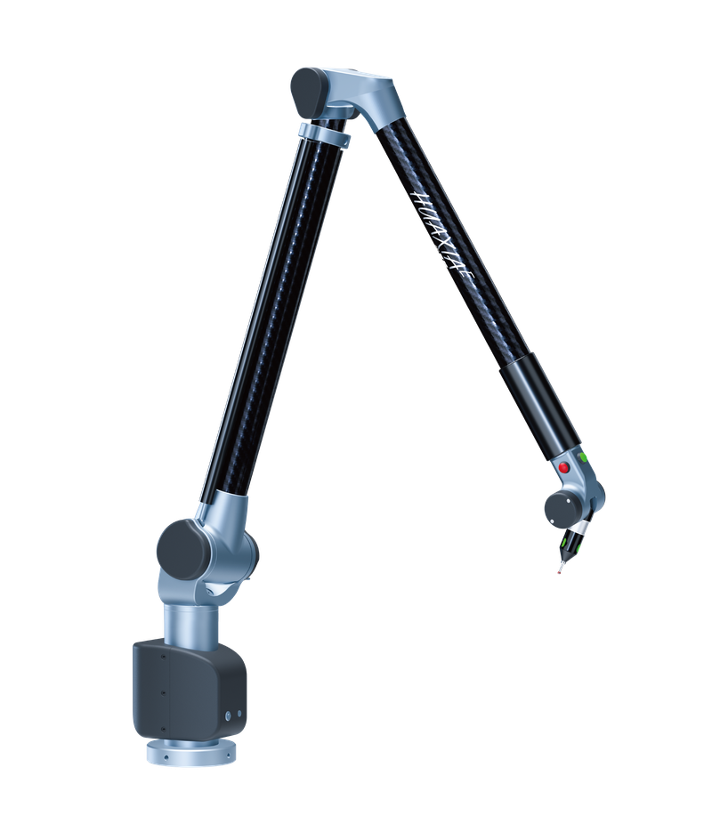
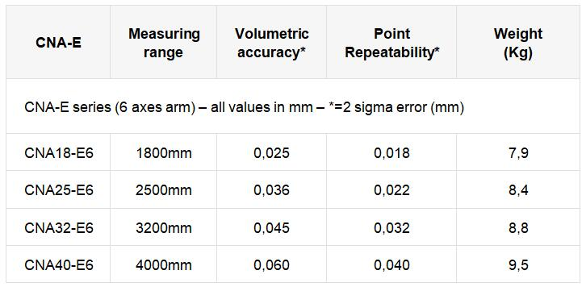
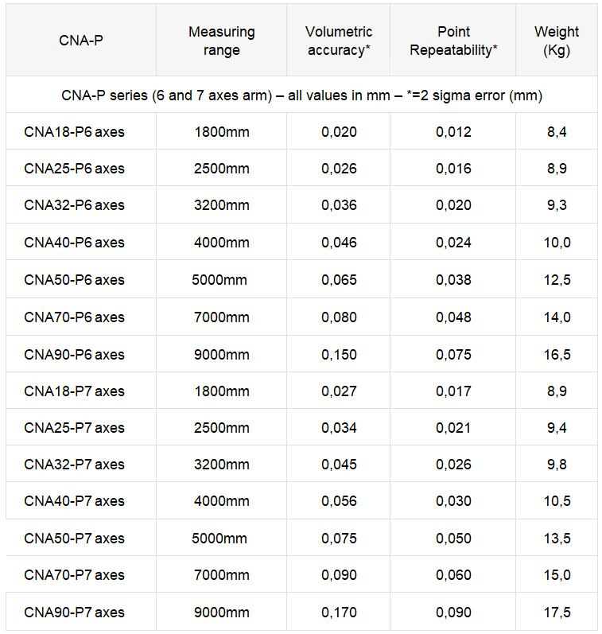
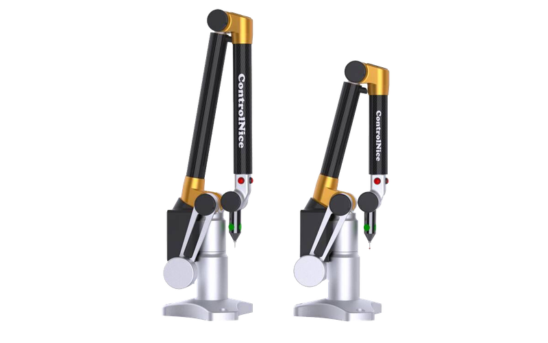
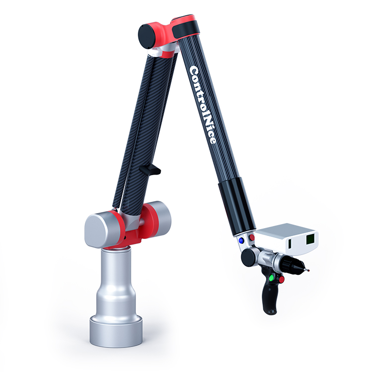
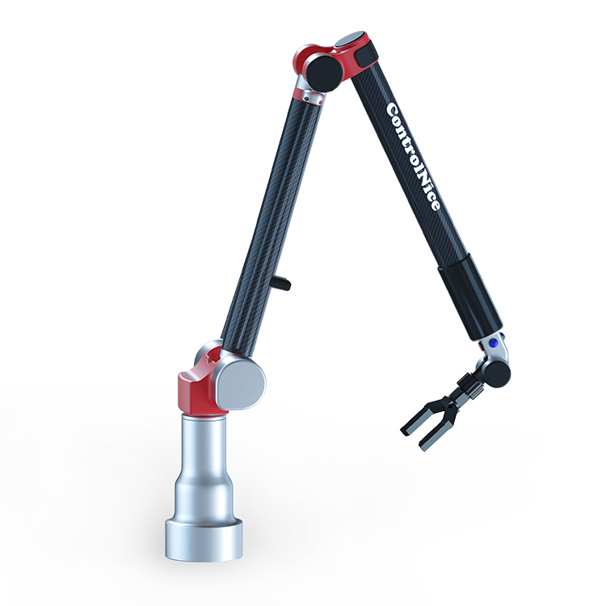
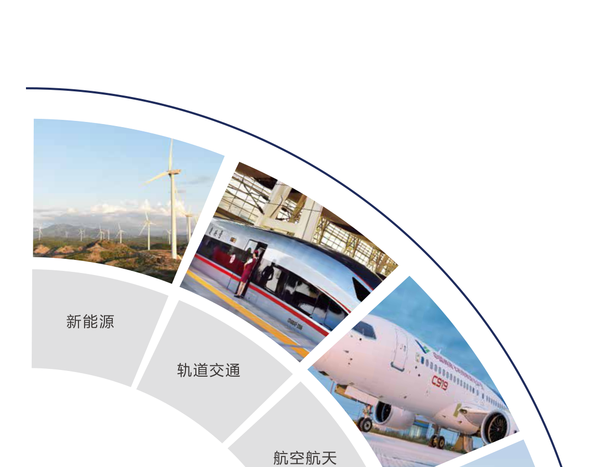
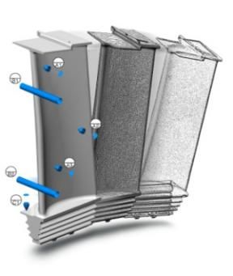

From compact workshop inspection to large-scale aerospace assembly — ControlNice offers a complete range of Articulated Arm CMMs and Portable Measurement Solutions.

The CNA-E and CNA-P are two portable articulated arms CMM, ideal for quick and accurate inspection of any parts within its range. The result of nearly 30 years of experience in production of portable measurement arms. Now with better accuracy, repeatability, and a new design.

High-precision 7-axis system designed for both reverse engineering and on-site measurement. Integrates seamlessly with laser scanners for high-density 3D scanning. 7 models from 1.8 m to 9.0 m.

Expand your measurement capabilities with ControlNice's comprehensive range of probes, sensors, and accessories — from hard touch probes to laser scanning heads.

Portable CMM that requires no fixed installation — designed for high-precision measurement on the shop floor. Industry-leading accuracy of 8 microns (ISO 10360-2).

7-axis arm with integrated high-speed 3D laser scanner. No powdering or target points required for most surfaces — including high-reflectivity or dark materials.

Non-contact laser fork system for inspecting tubes, hoses, and pipes. Directly interfaces with CNC tube benders for adjustment and springback correction.
HX series joint arm CMM measures dimensions, shape, and position accuracy of complex parts. Features flexible use, accurate and efficient measurement, and easy portability.
Powerful metrology software for inspection, reverse engineering, and quality reporting.
Professional Edition: Hard probe + CAD. Enterprise Edition: Hard probe + CAD + Tube module.

3D scanning and inspection software — evaluates errors by comparing scan data to CAD models.
Plugin for SOLIDWORKS — transforms 3D scan data into parametric CAD models.
Comprehensive inspection software supporting GD&T with automated reporting, trend analysis, and multi-device support.
Universal 3D metrology platform — high-density point cloud analysis, virtual gauging, and SPC monitoring.

Compatible with PowerInspect, TouchDMIS, Verisurf, and more metrology software platforms.
Ask About CompatibilityComprehensive backing for your metrology investment.
Comprehensive warranty coverage on all ControlNice products.
Worldwide calibration service to maintain ISO 10360 compliance.
On-site/online training and free software updates for product lifetime.
Find the right AACMM for your measurement challenge.
| Model | Range | Repeatability | Best For |
|---|---|---|---|
| AACMM-1200 | 1.2m | ≤ 0.008mm | Small parts, tool rooms |
| AACMM-2000 | 2.0m | ≤ 0.012mm | Automotive, general manufacturing |
| AACMM-3000 | 3.0m | ≤ 0.015mm | Aerospace, shipbuilding |
| AACMM-4500 | 9m | ≤ 0.020mm | Wind energy, large structures |
| Specification | ControlNice AACMM-4500 | Hexagon Absolute Arm 8545 |
|---|---|---|
| Max Range | 9m | 9m |
| Repeatability (at full range) | ≤ 0.020mm | ≤ 0.030mm |
| Precision Stability at Max Extension | Zero decay | ~15% increase in error |
| Warranty | 3 Years | 1 Year (standard) |
| Factory Calibration Included | Yes | Additional cost |
| Lead Time | 4-6 Weeks | 8-12 Weeks |
Three areas where ControlNice outperforms the industry standard.
Looking for a portable CMM? Get specs, pricing & compatibility in one click.
Instant Quote